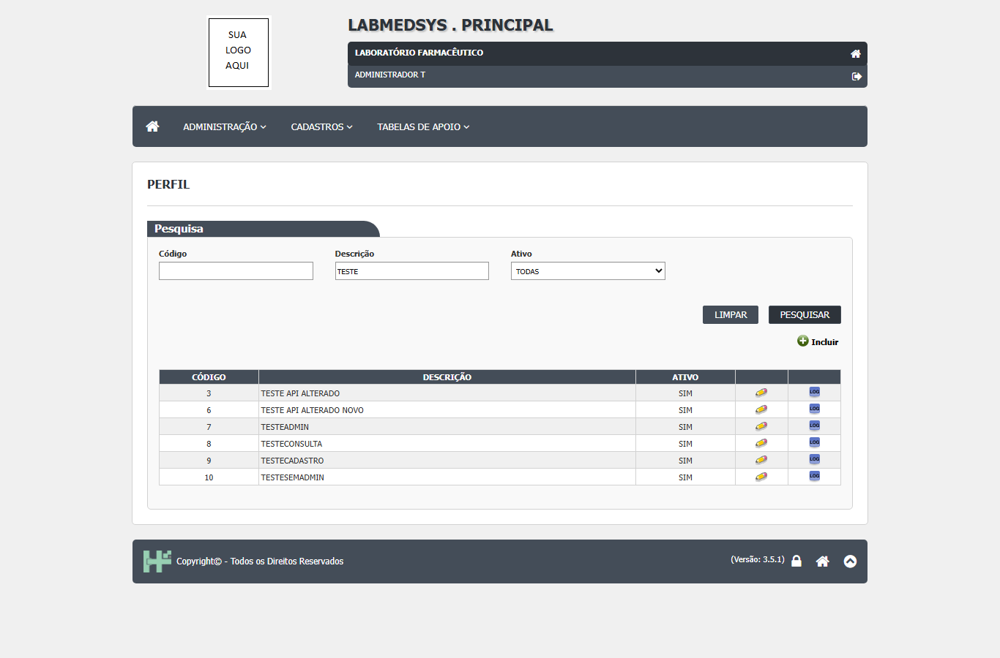
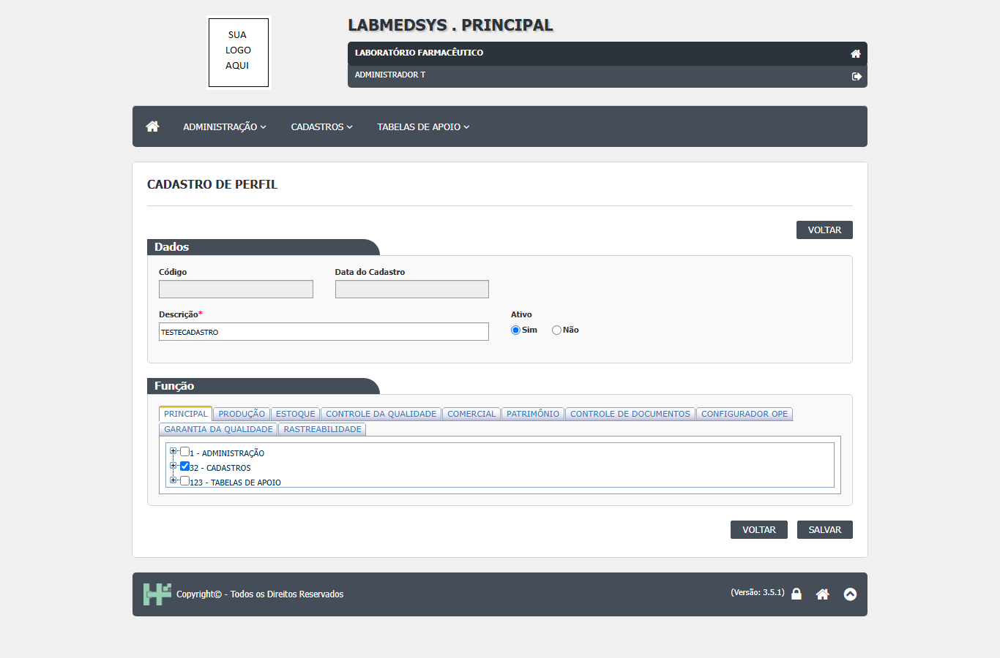
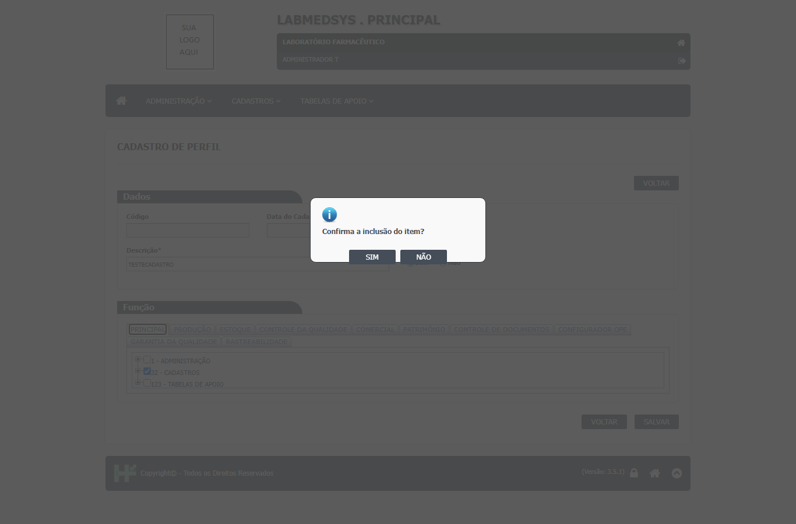
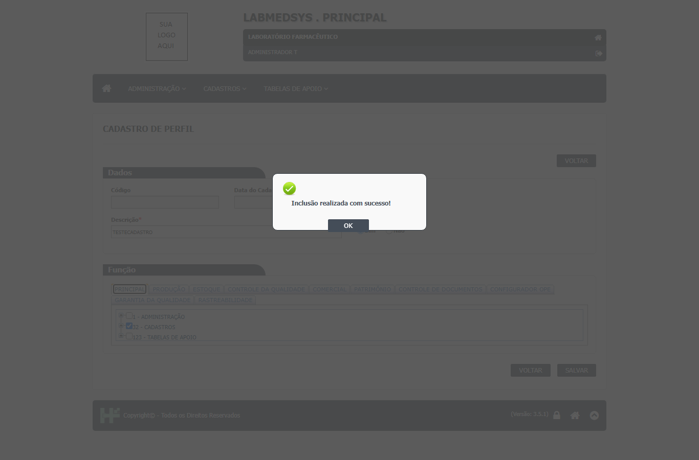
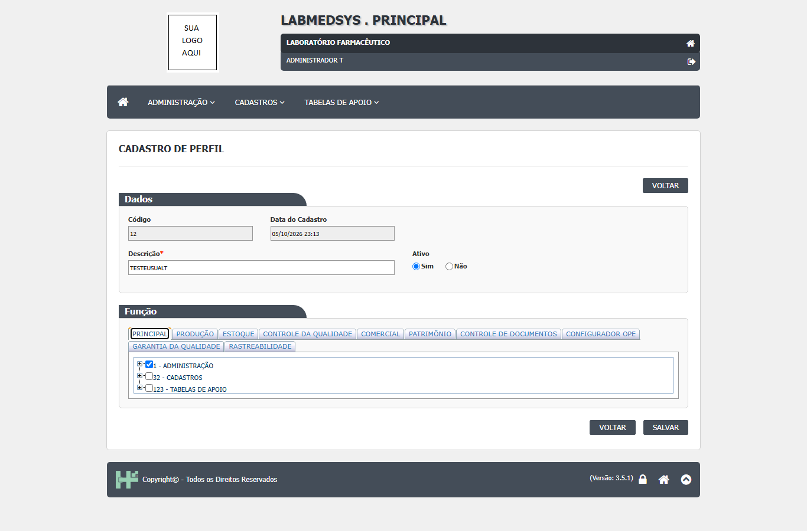
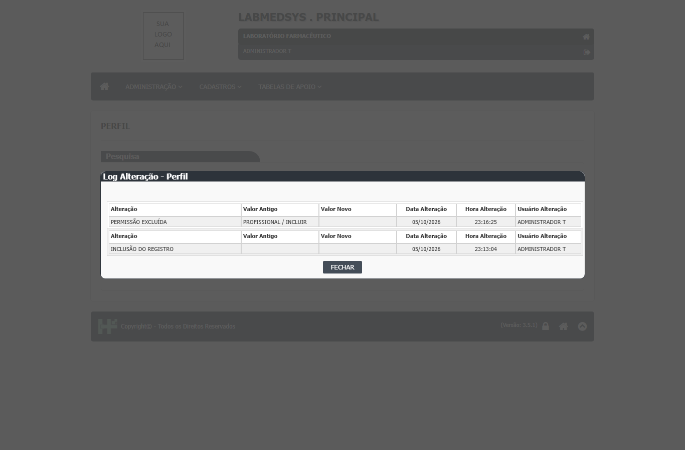
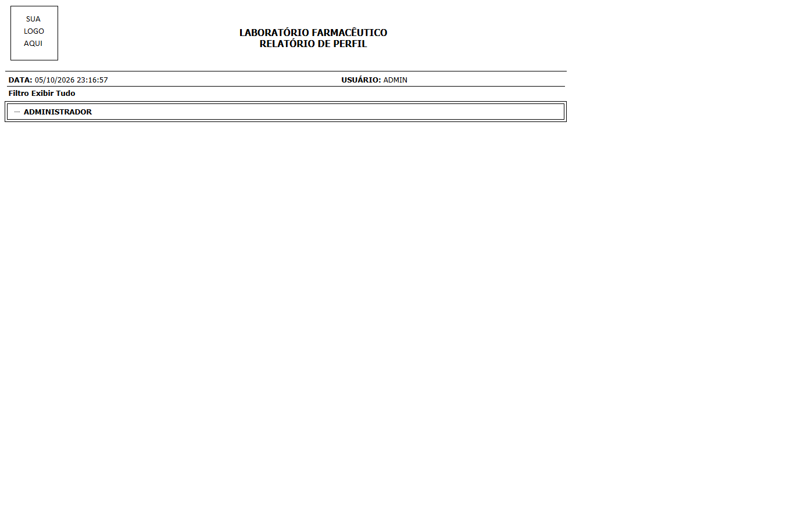

Para que serve
O Perfil é a tela em que se define o que cada papel pode fazer no sistema. Um perfil é um conjunto de permissões: para cada módulo, quais telas o usuário abre e o que pode fazer em cada uma (incluir, alterar, excluir, imprimir/exportar e consultar o histórico). Um usuário recebe um ou mais perfis na tela Conta usuário e soma as permissões de todos. Quem usa é o administrador do sistema e a Garantia da Qualidade, que responde pelo controle de acesso (leitura da área, a validar). Todos os módulos obedecem ao que se grava aqui.
Quem usa e em que etapa do processo
Quem usa
- O administrador do sistema e a Garantia da Qualidade, que responde pelo controle de acesso (leitura da área, a validar; Guia 33, 11.12.3).
- Todos os módulos obedecem ao que se grava aqui: as telas dos outros módulos leem as mesmas tabelas de perfil e função.
- Quem pode abrir, incluir, alterar, excluir, imprimir e ver o histórico está em "Quem pode usar (permissões)", mais abaixo.
Em que etapa do processo entra (tela 3 do menu Administração, módulo Principal)
- Pelo menu, com a lista vazia; é preciso clicar em Pesquisar.
- O perfil Administrador (código 1) só aparece para o usuário de código 1.
- Antes de criar uma conta, é preciso que exista pelo menos um perfil ativo para marcar na tela Conta usuário.
O que acontece depois (para onde o trabalho segue)
- Incluir grava o perfil, as permissões marcadas e o histórico "INCLUSÃO DO REGISTRO"; mostra "Inclusão realizada com sucesso!" e volta à lista.
- Alterar grava a descrição, a situação e as permissões (apaga todas as permissões do perfil e grava de novo as marcadas) e escreve o histórico. As mudanças valem para os usuários do perfil no próximo acesso deles (Perfil RN015 do documento de regras).
- Não há exclusão de perfil: só inativação.
- O próximo passo é a tela Conta usuário, onde o perfil é dado a cada pessoa.
Fonte: Resumo da tela e fluxo da tela (leitura do código e dos testes). O que for leitura da área precisa ser validado com a área.
Antes de começar (o que precisa existir)
| Precisa existir | Para quê | Onde se cadastra |
|---|---|---|
| A definição, junto com a Garantia da Qualidade, do que cada papel da fábrica (por exemplo almoxarife, analista do Controle de Qualidade, supervisor de produção) pode fazer em cada módulo | É o conteúdo das permissões do perfil | Decisão da área (ponto para validar quem aprova) |
| Permissão para a tela Perfil no seu próprio perfil | Para abrir a tela e ver Incluir, Editar e Log | Esta própria tela |
| Os módulos ativos | Cada módulo ativo vira uma aba na área Função | Configuração do sistema |
O perfil criado aqui só tem efeito depois de ser dado a um usuário na tela Conta usuário.
Passo a passo
Situação das imagens (14/11/2026): imagens reaproveitadas dos testes de 05 e 06/10/2026 (rodadas 1 e 2), cada uma conferida contra o texto. Sem imagem: perfil inativado, mensagem de descrição repetida, consulta com a árvore travada e o aviso "Preencha o Perfil".
Consultar a lista
- No menu Administração, abra Perfil. A tela mostra o quadro "Pesquisa" e nenhuma linha. Clique em PESQUISAR (perfil_lst.aspx.cs:24-29).
- Filtros: Código (até 2 dígitos), Descrição (parte do nome, até 50 caracteres) e Ativo (Todas, Sim, Não).
- A lista mostra Código, Descrição e Ativo, com os ícones Editar (lápis) e Log, 8 linhas por página. Quem só tem a consulta vê o ícone Consultar. Esta lista não tem Imprimir nem Excel. Sem resultado: "A pesquisa não retornou nenhum resultado.".

Figura 1: lista de perfis filtrada por "TESTE": seis perfis com Código, Descrição, Ativo e os ícones lápis (Editar) e LOG; o botão Incluir está acima da grade.
Criar um perfil
- Clique em Incluir (ícone de mais). Informe a Descrição (até 45 caracteres; o sistema grava em maiúsculas) e deixe Ativo: Sim.
- Na área Função, escolha a aba do módulo (Principal, Produção, Estoque...) e abra a árvore. Marcar só a tela libera a consulta; marcar uma ação (Incluir, Alterar, Excluir, Imprimir/Excel, Consultar log) marca a tela; desmarcar a última ação desmarca a tela (CT-PRI-053).

Figura 2: cadastro de perfil com a Descrição "TESTECADASTRO", Ativo Sim e a aba Principal da área Função, com o grupo "32 - CADASTROS" marcado.
- Clique em SALVAR e confirme com SIM ("Confirma a inclusão do item?").

Figura 3: pergunta "Confirma a inclusão do item?" com os botões SIM e NÃO.
- Aparece "Inclusão realizada com sucesso!"; clique em OK.

Figura 4: o aviso "Inclusão realizada com sucesso!" sobre o formulário.
- Atenção: na descrição, os caracteres
_,',-e/são removidos sem aviso (DV-PRI-001). O sistema aceita gravar um perfil sem nenhuma permissão; o usuário que só tiver esse perfil não consegue entrar ("Seu perfil não possuí permissão!", CT-PRI-011).
Alterar um perfil
- Na lista, clique em Editar (lápis). Quem só tem a consulta vê a árvore travada. O formulário mostra o Código e a Data do Cadastro travados.

Figura 5: perfil aberto para alteração (código 12, descrição "TESTEUSUALT") com a aba Principal e o grupo "1 - ADMINISTRAÇÃO" marcado.
- Marque ou desmarque as permissões. O sistema não pede justificativa e o histórico não a guarda (DV-PRI-024). Salve e confirme ("Confirma a alteração do item?"). Para deixar de usar um perfil, marque Ativo: Não; o perfil Administrador não pode ser inativado e um perfil inativo abre travado.
Ver o histórico
- Na lista, clique no ícone LOG. A janela mostra Alteração, Valor Antigo, Valor Novo, Data, Hora e Usuário, quatro linhas por página. O histórico registra cada permissão incluída ("NOVA PERMISSÃO") e excluída ("PERMISSÃO EXCLUÍDA") com a tela e a ação. Não mostra justificativa.

Figura 6: histórico de um perfil: "PERMISSÃO EXCLUÍDA" (valor antigo "PROFISSIONAL / INCLUIR") e "INCLUSÃO DO REGISTRO", com data, hora e usuário e sem coluna de justificativa.
Relatório de perfis
- O relatório de perfis (
perfil_rel) não é alcançável pela lista; só mostra os nomes dos perfis, sem as permissões (CT-PRI-054).

Figura 7: "RELATÓRIO DE PERFIL" com o filtro "Exibir Tudo": traz apenas o nome do perfil ADMINISTRADOR, sem a lista de permissões.
O que acontece ao confirmar ou salvar
- Incluir: grava o perfil, as permissões marcadas e o histórico "INCLUSÃO DO REGISTRO" (só essa linha: o conjunto inicial de permissões não aparece no histórico); mostra "Inclusão realizada com sucesso!" e volta à lista (perfil_ed.aspx.cs:319-320 e 440-444; bllPerfil.cs:116-133).
- Alterar: grava a descrição, a situação e as permissões (apaga todas as permissões do perfil e grava de novo as marcadas) e escreve o histórico (dalPerfil.cs:396-443; bllPerfil.cs:135-155). As mudanças valem para os usuários do perfil no próximo acesso deles.
- Não há exclusão de perfil: só inativação.
O que o sistema recusa
- "Preencha o Perfil" quando a Descrição está em branco.
- "Já existe um Perfil cadastrado com a descrição informada!" quando outro perfil usa a mesma descrição.
- "Não pode inativar o item administrador,porque existem vários itens abaixo e correlacionados!" ao tentar inativar o perfil Administrador (código 1).
- "Erro na inclusão do Perfil." / "Erro na alteração do Perfil." em falha de banco, com "Detalhe do erro (+)".
- Não há recusa para perfil sem nenhuma permissão: ele é gravado e quem só o tem não entra no sistema ("Seu perfil não possuí permissão!", mensagem do login).
Quem pode usar (permissões)
- A tela usa a função 13 (Perfil). Na árvore de permissões do Principal, "Perfil" tem Incluir, Alterar, Excluir e Consultar log; não tem Imprimir/Excel.
- Na lista, todos os usuários com acesso à tela veem Consultar; Editar depende de Alterar, o Log de Consultar log e o Incluir de Incluir (perfil_lst.aspx.cs:141-166).
- No formulário, quem não tem Alterar vê a árvore travada, exceto o usuário de código 1, que nunca é travado; o botão SALVAR não é escondido nesse caso (perfil_ed.aspx.cs:60-63 e 89).
- Quem não é o usuário 1 não vê o perfil Administrador na lista nem na tela Conta usuário.
- A lista bloqueia quem não tem a função (CT-PRI-062). O formulário e o relatório abrem pelo endereço para quem não tem permissão (DV-PRI-025, Alta, CT-PRI-063 e 068); não se testou se gravam.
- Quem define o perfil e quem o aprova são a mesma pessoa; não há segunda conferência. Ponto para validar com a área.
Cuidados e falhas conhecidas
- Mudar permissões não pede justificativa e o histórico não a guarda (DV-PRI-024, Média; visto na Figura 6): não há como saber por que um acesso foi dado ou tirado.
- Formulário e relatório abrem pelo endereço para quem não tem permissão (DV-PRI-025, Alta).
- O nome do perfil perde caracteres (
_,',-,/) sem aviso (DV-PRI-001, Baixa). - Um perfil sem permissões pode ser gravado; o usuário que só o tiver não consegue entrar.
- Pelo código (ainda não testado): perfil inativo pode continuar somando ações para quem o tem; todos os usuários recebem a ação "Consultar"; a inclusão não grava as permissões iniciais no histórico; perfis não podem ser excluídos, só inativados; a lista não diz quantos usuários usam o perfil. Pontos para validar com a área.
Ícones e botões da lista
| Ícone ou botão | O que faz | Quando aparece |
|---|---|---|
| PESQUISAR | Lista os perfis pelos filtros | Sempre |
| LIMPAR | Esvazia filtros e lista | Sempre |
| Incluir (ícone de mais) | Abre o cadastro de perfil em branco | Para quem tem Incluir |
| Lápis (Editar) | Abre o perfil para alterar | Em cada linha, para quem tem Alterar |
| Consultar | Abre o perfil com a árvore travada | Em cada linha, para quem só tem a consulta |
| LOG | Abre o histórico do perfil | Em cada linha, para quem tem Consultar log |
Botões do formulário: SALVAR (pede confirmação e grava), VOLTAR (sai sem gravar).
Campos da tela
Caminhos das fontes na seção Resumo da tela. "Sim (servidor)" quando o servidor também recusa; "Só na tela" quando só o navegador confere.
| Campo na tela | Tipo | Obrigatório | Regra, limite ou valores possíveis | Fonte |
|---|---|---|---|---|
| Lista: Código | Texto de até 2 caracteres | Não | Procura o código exato do perfil | perfil_lst.aspx:40-41; dalPerfil.cs:529-532 |
| Lista: Descrição | Texto de até 50 | Não | Procura dentro da descrição | perfil_lst.aspx:45-46; dalPerfil.cs:534-537 |
| Lista: Ativo | Lista | Não | Todas, Sim, Não | perfil_lst.aspx:50-56; dalPerfil.cs:539-542 |
| Código (formulário) | Texto travado | Não se aplica | Gerado pelo sistema | perfil_ed.aspx:147; perfil_ed.aspx.cs:77 |
| Data do Cadastro | Texto travado | Não se aplica | Data e hora da criação | perfil_ed.aspx:151; perfil_ed.aspx.cs:79 |
| Descrição | Texto de até 45 | Sim | "Preencha o Perfil"; gravada em maiúsculas; o navegador remove _, ', - e /; única no sistema |
perfil_ed.aspx:157-161; perfil_ed.aspx.cs:302 e 311-312 |
| Ativo | Sim ou Não | Sim | Na inclusão vem Sim; o Administrador não pode ser inativado | perfil_ed.aspx:165-170; perfil_ed.aspx.cs:342-347 |
| Função (árvore por módulo) | Árvore com marcação, uma aba por módulo ativo | Não (o sistema aceita perfil sem permissão) | Tela e ações Incluir, Alterar, Excluir, Imprimir/Excel e Consultar log; marcar ação marca a tela | perfil_ed.aspx:182-187; perfil_ed.aspx.cs:156-217 e 410-436 |
Botões e ações
| Botão ou ação | Quando aparece | O que faz | Para onde leva | Fonte |
|---|---|---|---|---|
| Pesquisar | Sempre, na lista | Lista os perfis conforme os filtros | Não muda | perfil_lst.aspx.cs:24-29 |
| Limpar | Sempre, na lista | Esvazia os filtros e a lista | Não muda | perfil_lst.aspx.cs:31-34 e 189-196 |
| Novo (ícone +) | Se o usuário pode incluir | Abre o formulário em branco | Não muda | perfil_lst.aspx.cs:36-39 |
| Consultar (lupa) | Em toda linha | Abre o formulário (travado se o usuário não pode alterar) | Não muda | perfil_lst.aspx.cs:122-124 e 159-166 |
| Editar (lápis) | Em toda linha, conforme a permissão de alterar | Abre o formulário | Não muda | perfil_lst.aspx.cs:126-128 |
| Log (ícone) | Em toda linha, conforme a permissão de histórico | Abre o histórico do perfil | Não muda | perfil_lst.aspx.cs:130-137 |
| SALVAR | No formulário | Pede confirmação e grava (incluir ou alterar) | Lista, depois do OK | perfil_ed.aspx.cs:251-261 e 289-408 |
| VOLTAR (topo e rodapé) | Sempre | Volta à lista sem gravar | Lista | perfil_ed.aspx.cs:263-271 |
| Detalhe do erro (+) | Quando há erro tratado | Mostra o texto interno do erro | Não muda | perfil_ed.aspx.cs:273-287 |
Mensagens do sistema
As marcadas "vista em teste" aparecem no resultado das rodadas.
| Mensagem (texto exato do código) | Quando aparece | Fonte |
|---|---|---|
| A pesquisa não retornou nenhum resultado. | Pesquisa sem resultado | perfil_lst.aspx.cs:85 |
| Não existe log de alteração para este registro. | Histórico vazio | perfil_lst.aspx:190 |
| Preencha o Perfil | Descrição em branco | perfil_ed.aspx:159 |
| Já existe um Perfil cadastrado com a descrição informada! | Descrição já usada por outro perfil | perfil_ed.aspx.cs:311-312 |
| Não pode inativar o item administrador,porque existem vários itens abaixo e correlacionados! | Tentativa de inativar o perfil 1 | perfil_ed.aspx.cs:347 |
| Confirma a inclusão do item? / Confirma a alteração do item? | Ao clicar SALVAR (vistas em teste, preparação de 05/10/2026 e CT-PRI-053) | perfil_ed.aspx.cs:480 e 484 |
| Inclusão realizada com sucesso! / Alteração realizada com sucesso! | Depois de gravar | perfil_ed.aspx.cs:320 e 367 |
| Erro na inclusão do Perfil. / Erro na alteração do Perfil. | Falha de banco, com "Detalhe do erro (+)" | bllPerfil.cs:130 e 152 |
| Seu perfil não possuí permissão! | Usuário cujos perfis não têm nenhuma função tenta entrar (vista em teste, CT-PRI-011, 06/10/2026); mensagem do login | Default.aspx.cs:296 |
Quem pode fazer o quê
Ainda não levantado para esta tela
O quadro "Quem pode fazer o quê" é preenchido a partir de testes de tela por perfil (nível, área e etapa do registro), nunca por suposição. Esta tela ainda não passou por esse levantamento.